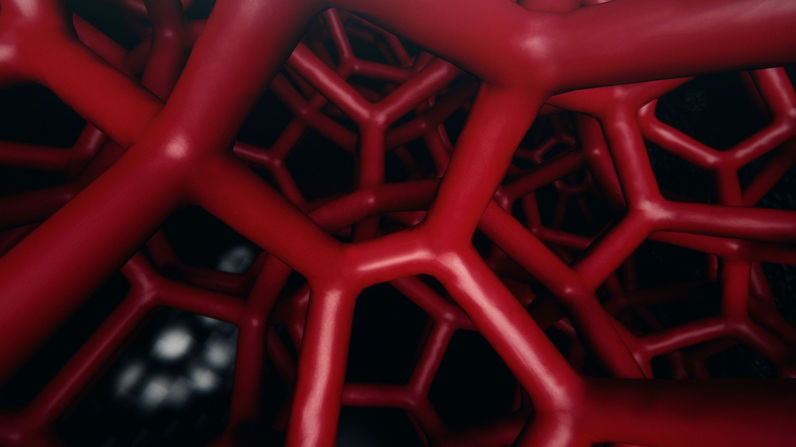

+++
title = "3 Boyutlu Yazıcılar ve Üretim"
description=""
url="sayi-5/3b-yazicilar-ve-uretim"
aciklama="Bir önceki sayıda 3B yazım sürecine; detaylıca makine türlerine ve malzemelerine; tasarımcılar olarak 3B baskıya uygun ve doğru ürünler elde edebilmek için tasarım aşamasında dikkat edilmesi gereken hususlara değinmiştik. Bu sayıda ise 3B yazıcıların endüstriyel üretimde neden ve nasıl kullanıldığına/kullanılmadığına değineceğiz."
type="sayfa"
thumb="/img/3b-yazicilar-uretim-thumbnail.jpg"
date = "2021-01-01"
sayi=["05"]
sayfa="07"
yazar=["hilal doruk"]
tags= ["anasayfa", "dergi", "3d baski"]
+++

<div class="container">

   <p>
      Bir önceki sayıda 3B yazım sürecine; detaylıca makine türlerine ve
      malzemelerine; tasarımcılar olarak 3B baskıya uygun ve doğru ürünler elde
      edebilmek için tasarım aşamasında dikkat edilmesi gereken hususlara
      değinmiştik. Bu sayıda ise 3B yazıcıların endüstriyel üretimde neden ve
      nasıl kullanıldığına/kullanılmadığına değineceğiz.
   </p>

   <h2>Üretimde 3B Yazıcılar</h2>
   <p>
      3B baskıya geçiş, işletmelerin ve odaklanmış ürün ekiplerinin yeni
      ürünleri daha sık piyasaya sürdüğü kısa vadeli parça üretimini
      düşünmelerini mümkün kılabiliyor. Hayal güçlerinin ötesinde ve kesinlikle
      geleneksel yöntemlerle gelen kısıtlamaların ötesinde çalışabilecekler. 3B
      yazıcılar fiziksel parçalar için çevik bir geliştirme süreci sunar;
      üretimi ve pazara sunulması için gereken süreyi hızlandırma yeteneğine
      sahiptir. İlk birkaç yüz parçanın üretilmesi söz konusu olduğunda 3B
      baskının geleneksel yöntemlerin çok ilerisinde olduğuna şüphe yoktur. Peki
      3B baskı büyük ölçekli üretim için de uygun mudur? 3B baskı, üretim
      süreçlerini etkileme ve işletmelerin daha yüksek bir seviyede performans
      göstermesine yardımcı olma şekli nedeniyle diğer birçok teknolojiden daha
      hızlı gelişen ve büyüyen bir teknolojidir. 3B baskı için kurulan bir
      üretim hattının değiştirilmesi, geleneksel üretim için olan üretim
      hattından daha kolaydır. Tüm bunlar 3B baskıyı uygulanabilir bir seçenek
      haline getirir. Tüm üretim hattı, baskı üretim hattının hızına göre
      ayarlanabilir ve uyarlanabilir. Bu nedenle, makinelerde iyileştirmeler,
      baskı hızında ayarlamalar ve hatta ürün değişikliği neredeyse anında
      yapılabilir. Geleneksel yöntemle bu değişiklikleri yapmak ve ardından
      yeniden üretime başlamak birkaç hafta veya ay sürebilir.
   </p>
   <h3>Büyük Ölçekli Üretim İçin 3B Baskıyı Kullanmanın Zorlukları</h3>
   <p>
      Üretim için 3B baskıyı kullanmanın faydaları göz ardı edilemez:
      verimlilik, hız, israfı azaltma, daha az hata ve daha az maliyet. Bununla
      birlikte, birçok üretici hâlâ geleneksel yöntemlerden bu yeni üretim
      yöntemine geçiş yapmamaya karar veriyor. Belirli büyük ölçekli parçaların
      üretimi söz konusu olduğunda, bir 3B yazıcı kullanmak, şirketlerin
      uğraşması gereken bazı zorluklarla birlikte gelir, örneğin: Ekipmanın
      maliyeti Spesifik sektör için mevcut malzemeler İşlem sonrası ihtiyaçlar
      Üretim maliyetleri Uzmanlık gereksinimi Yazılım geliştirme ve yetenekler
      Geri dönüştürülebilirlik. Bunlar, herhangi bir işletmenin 3B baskı
      kullanmaya gelince karşılaşacağı tüm zorluklar değildir, ancak
      işletmelerin karşılaşacağı temel zorluklardır.
   </p>
   <ul>
      <li>
         <details open="">
            <summary>
               <strong>Üretim için 3B baskıyı kullanmanın avantajları</strong>
            </summary>
            <ol class="numbered-list" start="1">
               <li>
                  Maliyetlerde azalma
                  <p class="">
                     Geleneksel üretim yöntemleri 3B baskı sürecinin aksine
                     oldukça maliyetlidir. Geleneksel üretimdeki bir dizi
                     makine, ürünü bir araya getirmek için bir üretim hattı ve
                     çok sayıda işçi gereksinimi 3B baskı söz konusu olduğunda
                     ortadan kalkar. Her bir 3B yazıcı, üretilmek istenen
                     tasarımın otomatik üretim sürecini başlatabilmesi için bir
                     operatörün makineyi başlatmasını gerektirir; dolayısıyla
                     işçilik maliyeti düşüktür.
                  </p>
                  <p class="">
                     Büyümesi artan görece yeni bir teknoloji olan 3B baskı ile
                     üretimde malzeme maliyetleri yüksek olabilir; ancak artan
                     malzeme çeşitliliği ile bu maliyetler zamanla azalacaktır.
                     Buna rağmen geleneksel üretim yöntemlerinde maliyet çok
                     daha fazladır.
                  </p>
               </li>
            </ol>
            <ol class="numbered-list" start="2">
               <li>
                  Risklerin azaltılması
                  <p class="">
                     Üreticiler bir tasarımı üretimden önce onaylayabilmek
                     amacıyla 3B baskı prototipleri ile hata, malzeme ve para
                     israfı riskini ortadan kaldırabilir. Üstelik 3B baskı bir
                     prototipi yeniden tasarlamanın ve değiştirmenin geleneksel
                     yöntemlere göre oluşturulanlardan daha kolaydır ve daha
                     güven vericidir.
                  </p>
                  <p class="">
                     Geleneksel üretim yöntemleri genellikle seri üretimin
                     verimliliğine dayanır ve çok sayıda montaj işçisi
                     gerektirir. Üreticilerin kurulum maliyetlerini
                     gerekçelendirmek için çok fazla ürün üretmesi gerekir.
                  </p>
               </li>
            </ol>
            <ol class="numbered-list" start="3">
               <li>
                  Başarısızlık daha ucuz ve daha hızlıdır
                  <p class="">
                     Üretim turları arasında 3B yazıcıların farklı bir ürün
                     yapmak için yeni bir makine ve alet takımı ile donatma
                     gereksinimi bulunmamakta. Monte edebilme hızı söz konusu
                     olduğunda geleneksel montaj hattı daha hızlıdır; fakat
                     geleneksel imalatta üretimi durdurma noktasına
                     getirebilecek insan hatasından makine sorunlarına kadar
                     ters gidebilecek birçok durum vardır.
                  </p>
               </li>
            </ol>
            <ol class="numbered-list" start="4">
               <li>
                  Pazara giriş zamanı 3B baskı, tasarım fikirlerinin daha hızlı
                  geliştirilip üretilmesini sağladığı için şirketler
                  rakiplerinin önünde kalmasının yanı sıra üretim süresini
                  aylardan günlere düşürebilir. 3B konseptlerin tasarımına göre
                  bir ürün aynı gün tasarlanıp basılabilir.
               </li>
            </ol>
            <ol class="numbered-list" start="5">
               <li>
                  Oluşturun ve büyütün 3B üretimde hızlıca ve geleneksel
                  yöntemler için
                  <em>uçuk olan fikirler, konseptler, tasarımlar</em>
                  modellenip
                  <em></em>
                  üretilir ve daha sonra geliştirilebilir. Bu nedenle, herhangi
                  bir işletme için, bir ürün bir fikirden, bir konsepte ve
                  bitmiş parçaya kadar gidebilir.
               </li>
            </ol>
            <ol class="numbered-list" start="6">
               <li>
                  Geometrilerde Sınırlama Yok Geleneksel üretim yöntemleriyle
                  yön değiştiren delikler, kare iç boşluklar gibi geometriler
                  uzun yıllar boyunca üretilemedi. 3B üretim ile bugün var olan
                  ve gelecekte yapılacak birçok iyileştirme sayesinde ürünlerin
                  tasarımına yetebilen olası geometriler listesi sonsuz.
               </li>
            </ol>
            <ol class="numbered-list" start="7">
               <li>
                  Daha az atık Maliyetle orantılı olarak geleneksel üretim
                  yöntemleri söz konusu olduğunda çok fazla kaynak israfı
                  mevcut. 3B baskıda ise kaynaklar daha verimli kullanılır. Bir
                  3B yazıcı üretim esnasında temelde yalnızca yazıcının
                  püskürtme haddesinden geçen ve ürünün montajı için kullanılan
                  malzemeyi kullanacaktır. Enjeksiyon kalıplarının aksine
                  kalıpları doldurmak için ek bir malzemeye de ihtiyaç vardır.
                  Sonuçta destek malzemesi gibi atıklar ortaya çıkacaktır.
               </li>
            </ol>
            <ol class="numbered-list" start="8">
               <li>
                  Daha az depolama alanı 3B baskı ile üretim talep anında
                  üretilebilme kapasitesine sahip olduğundan geleneksel
                  yöntemlerle seri üretim sonucunda oluşan depolama alanı
                  gereksinimi ve dolayısıyla maliyet büyük oranda azalır.
               </li>
            </ol>
         </details>
      </li>
   </ul>
   <p></p>
   <h2>Uygulama Alanları</h2>
   <h3>Havacılık ve Savunma Endüstrisi</h3>

   <div class="row">
      <div class="col-md-8">
         <div class="bg-grey p-md-3">
            <span class="icon">🚀</span>

            3B Baskılı Roket Bileşenleri Özellikle metallerle 3B baskı, roket
            üretiminde giderek daha fazla kullanılmakta. 3B baskı, mühendislerin
            roket parçalarının tasarımında yenilik yapmasına ve bunları daha
            kısa sürede üretmesine olanak sağlıyor. Bunun bir örneği, Airbus
            Group ve Safran&#x27;ın ortak girişimi olan Ariane Group tarafından
            geliştirilen Ariane 6 başlatıcısı için bir enjektör kafasıdır.
            Enjektör kafası, yakıt karışımını yanma odasına zorlayan bir tahrik
            modülünün temel elemanlarından biridir. Geleneksel olarak enjektör
            kafaları, birlikte işlenmesi ve kaynaklanması gereken düzinelerce
            hatta yüzlerce parçadan yapılır. Buna karşılık, 3B baskı, bu
            bileşenlerin tek parça olarak üretilmesini sağlar. Ekip, başlangıçta
            <em>
               248 bileşen gerektiren bir tasarımı aldı ve bunu SLM
               teknolojisiyle malzemesi nikel bazlı bir alaşım olan bir adet 3B
               baskılı parçaya indirdi
            </em>
            . Eskiden döküm ve işleme üç aydan uzun sürerken, dört paralel lazer
            ile bir EOS M 400-4 3B yazıcı kullanılarak Eklemeli Üretim ile
            üretim süresi 35 saate düşürüldü. Ek bir avantaj, %50&#x27;lik bir
            maliyet azalmasıydı.
         </div>
      </div>
      <div class="col-md-4">
         <figure class="image">
            {{}}
         </figure>
      </div>
   </div>

   <p></p>

   <div class="bg-grey p-md-3">
      <span class="icon">💡</span>

      Elektronik 3B baskı, PCB&#x27;leri (printed circuit boards: baskılı devre
      kartları) imal etmek için 3B yazıcıları kullanmak, savunma şirketleri için
      giderek büyüyen bir alanıdır. PCB&#x27;ler elektroniklerin beynidir;
      akıllı telefonlarımızı ve blu-ray oynatıcılarımızı çalışır hale getiriyor.
      Prototip oluşturma için şirket içinde PCB yazdırmak yalnızca prototip
      oluşturma sürecini hızlandırmakla kalmaz, aynı zamanda
      <em>yüksek düzeyde IP koruması sağlar</em>
      . Ancak PCB baskı teknolojisi, küçük ve orta ölçekli seri üretim için de
      kullanılabilecek noktaya gelmiştir.
   </div>

   <div class="row">
      <div class="col-md-4">
         <figure class="image">
            {{}}
         </figure>
      </div>
      <div class="col-md-4">
         <figure class="image">
            {{}}
         </figure>
      </div>
      <div class="col-md-4">
         <figure class="image">
            {{}}
         </figure>
      </div>
   </div>

   <h3>Otomotiv Endüstrisi</h3>
   <div class="bg-grey p-md-3">
      <span class="icon">🚗</span>
      3B Baskılı Özel Koltuklar
      <br>

      3B Baskılı Özel Koltuklar Porsche, kısa süre önce, 3B baskı ve kafes
      tasarımından yararlanan yeni bir spor araba koltuğu konseptini tanıttı.
      Yeni koltuklar, üç sertlik seviyesi ile özelleştirilebilen poliüretan 3B
      baskılı orta koltuk ve sırtlık minderi bölümlerine sahiptir: sert, orta ve
      yumuşak. 17 Mart 2020 tarihli Porsche haberine göre, &quot;Başlangıçta
      Avrupa&#x27;da olmak üzere Mayıs 2020&#x27;den itibaren 911 ve 718
      serileri için sürücü koltuğu olarak Porsche Tequipment&#x27;ten satışa
      sunulacak. Menzil başlangıçta, altı noktalı emniyet kemeri ile birlikte
      Avrupa&#x27;daki yarış pistlerinde kullanılmak üzere 40 koltuk
      prototipiyle sınırlı olacak. Müşterilerden gelen geri bildirimler
      geliştirme sürecine dahil edilecektir. Bir sonraki adım olarak, 2021
      ortasından itibaren Porsche Exclusive Manufaktur&#x27;dan üç farklı
      sertlik seviyesinde ve renklerde, trafikte kullanıma uygun olacak olan
      koltuklar sunulacak.&quot;
      <br>
      <br>
      Porsche, genel olarak koltuğu müşterinin özel vücut hatlarına göre
      kişiselleştirerek koltuk özelleştirmesini sertlik ve rengin ötesine
      taşımak istiyor. 3B baskı şu anda bu düzeyde özelleştirmeyi sağlayabilen
      tek teknoloji olmaya devam ediyor.
   </div>

   <div class="row">
      <div class="col-md-3">
         <figure class="image">
            {{}}
         </figure>
      </div>
      <div class="col-md-3">
         <figure class="image">
            {{}}
         </figure>
      </div>
      <div class="col-md-3">
         <figure class="image">
            {{}}
         </figure>
      </div>
      <div class="col-md-3">
         <figure class="image">
            {{}}
         </figure>
      </div>
   </div>

   <p></p>
   <div class="bg-grey p-md-3">
      <span class="icon">🚘</span>

      Ford firmasının ödüllü araçlarından biri, FDM kullanılarak üretilen kalıp
      yenilikçiliğinin bir örneği bir montaj asansörüdür. 3B baskılı parça,
      geleneksel bir muadilinden %50 daha düşük maliyetlidir ve tedarik
      sürelerini önemli ölçüde kısaltmıştır. Ağırlık azaltma, kullanım durumunda
      önemli bir faktör, çalıştırmayı kolaylaştıracak ve tekrarlayan hareket
      yaralanmalarını azaltacaktı. 3B baskı ile mühendisler, önemli ölçüde daha
      hafif bir fikstür üretebildiler.
   </div>
   <div class="row">
      <div class="col-md-3">
         <figure class="image">
            {{}}
         </figure>
      </div>
      <div class="col-md-3">
         <figure class="image">
            {{}}
         </figure>
      </div>
      <div class="col-md-3">
         <figure class="image">
            {{}}
         </figure>
      </div>
      <div class="col-md-3">
         <figure class="image">
            {{}}
         </figure>
      </div>
   </div>

   <h3>Tıp ve Dişçilik Endüstrisi</h3>
   <figure>
      <span class="icon">🧬</span>

      Biyolojik Baskı — Biyo-mürekkep: Plastik veya metal parçaları kullanmak
      yerine, 3B biyoyazıcılar ile organ dokularını taklit eden biyomürekkep ile
      canlı hücreleri katman katman diziliyor. Kıkırdak, deri ve kemik gibi
      görece basit yapay doku ve yapıları; kan damarları ve kalp yamaları
      üretmek için hazırda kullanılıyor. ABD merkezli bir tıbbi laboratuvar ve
      araştırma şirketi olan Organovo biyolojik baskılı dokuları üretmek için
      donör organlardan alınan hücreleri biyo-mürekkebe dönüştürüyor. Bu
      hücreler küçük doku alanları oluşturmak için katmanlanıyor. Bu katmanlı
      üretilmiş dokular, büyük bir rejeneratif tıp potansiyeli ile yeni ilaç ve
      tedavileri test etme; hayvanlar üzerinde test etme veya riskli deneyler
      yapma ihtiyacına çözüm olabilir.
   </figure>
   <div class="row">
      <div class="col-md-3">
         <figure class="image">
            {{}}
         </figure>
      </div>
      <div class="col-md-3">
         <figure class="image">
            {{}}
         </figure>
      </div>
      <div class="col-md-3">
         <figure class="image">
            {{}}
         </figure>
      </div>
      <div class="col-md-3">
         <figure class="image">
            {{}}
         </figure>
         <figure class="image">
            {{}}
         </figure>
      </div>
   </div>

   <div class="row">
      <div class="col-md-6">
         <div class="bg-grey p-md-3">
            <span class="icon">🦷</span>

            Şeffaf diş telleri, dişleri ayarlamak ve düzeltmek için kullanılan
            dental cihazlardır ve doğası gereği kişiselleştirilmiş ürünlerdir.
            3B baskı uygun maliyetli kişiselleştirilmiş baskı için birebirdir.
            Bu baskıyı mümkün kılan anahtar teknolojiler, yüksek hızları ve
            doğrulukları nedeniyle Stereolitografi (SLA) ve Malzeme Püskürtme
            (MJ)&#x27;dir. Invisalign markası altında tanınan en büyük şeffaf
            plaklar (çarpık dişlerin sırasını düzelten plastik ortodonti aleti -
            diş teli alternatifi olarak kullanılıyor) üreticisi olan Align
            Technology de şeffaf hizalayıcılar için 3B baskı kullanan bir şirket
            örneği. Şirketin 2019 yılında günde yarım milyondan fazla benzersiz
            3B baskılı parça ürettiği bildirildi.
         </div>
         <figure class="image">
            {{}}
         </figure>
      </div>
      <div class="col-md-6">
         <div class="bg-grey p-md-3">
            <span class="icon">🦷</span>

            Dijital Diş Hekimliği
            <br>
            <br>
            Dental ölçüleri oluşturmak için kullanılan geleneksel süreçler,
            masaüstü 3B baskı sistemleri, 3B tarayıcılar ve materyallerin daha
            erişilebilir hale gelmesiyle giderek yerini dijital teknolojilere
            bırakıyor. Ağız içi tarama ve 3B baskıyı birleştirerek, diş
            laboratuvarları bir hastanın anatomisine mükemmel şekilde uyan
            kronlar, köprüler ve ısırma atelleri gibi diş ürünleri daha hızlı ve
            daha ucuza oluşturabilir. SLA ve SLS masaüstü makineleri üreticisi
            Formlabs, makinelerinde yapılan cerrahi kılavuzlar kullanılarak
            50.000&#x27;den fazla ameliyatın gerçekleştirildiğini tahmin ediyor.
         </div>
         <figure class="image">
            {{}}
         </figure>
      </div>
   </div>

   <p></p>
   <div class="bg-grey p-md-3">
      <span class="icon">🦴</span>
      <p>
         3B baskı ile plastik veya metal malzemeden protez ve ortopedik cihazlar
         oluşturmak için de kullanılıyor. İmplantlar söz konusu olduğunda, 3B
         baskı şu anda kalça ve diz eklemi protez, kafatası rekonstrüksiyon
         implantları ve omurga implantları oluşturmak için kullanılmaktadır.
         Lima Corporate, ortopedik ürünlerde 3B baskının öncülerinden biri olan
         İtalyan bir şirkettir. Kalça protezlerinin temel parçaları olan
         asetabular kaplar gibi parçaları üretmek için şu anda en az 15 metal 3B
         yazıcı kullanıyor. Bir vaka: Kalça protezi ihtiyacı duyan bir dağcı,
         Lima&#x27;nın 3B baskılı asetabular kapağa sahip kalça implantını aldı.
         3B baskı sayesinde, doğal kemiğin gözenekli yapısını taklit eden, kemik
         entegrasyonunu iyileştiren, implantın vücudun kalıcı bir parçası haline
         gelmesini sağlayan bir işlem olan bir kap üretmek mümkün oldu. Sonuçta
         hasta, implantasyondan iki buçuk ay sonra tekrar yürüyebildi ve
         tırmanabildi.
      </p>
   </div>

   <div class="row">
      <div class="col-md-3">
         <figure class="image">
            {{}}
         </figure>
      </div>
      <div class="col-md-3">
         <figure class="image">
            {{}}
         </figure>
      </div>
      <div class="col-md-3">
         <figure class="image">
           
         </figure>
      </div>
      <div class="col-md-3">
         <figure class="image">
            
         </figure>
      </div>
   </div>

   <h3>Tüketim Ürünleri</h3>
   <div class="bg-grey p-md-3">
      <span class="icon">👟</span>

      Örneğin Adidas, Carbon’ın tescilli
      <em>Digital Light Synthesis</em>
      3B teknolojisini kullanarak
      <em>Futurecraft 4D</em>
      spor ayakkabıları için orta tabanları 3B olarak yazdırıyor. 3B baskıyı bu
      şekilde kullanmanın en önemli avantajlarından biri, orta tabanın çeşitli
      özellikleri sayesinde çeşitli sporlar için ayakkabı performansını
      arttırmaktır. Spor ayakkabının tabanında daha iyi yastıklı bir orta taban
      için 20,000 destekleyici bulunuyor; bunu geleneksel yöntemlerle üretmek
      mümkün değil. Örneğin enjeksiyon veya kompresyon kalıplama ile, ihtiyaç
      duyulan değişken özelliklere sahip orta taban oluşturmak neredeyse
      imkansızdır ve montaj gerektirir.
   </div>
   <div class="bg-grey p-md-3">
      <span class="icon">👁️</span>

      Fransız moda şirketi Chanel, 2018&#x27;de dünyanın ilk 3B baskılı maskara
      fırçasını piyasaya süren 3B baskının potansiyelini gösteren bir şirkettir.
      Révolution Volume maskara fırçası, lazer ışını kullanan SLS teknolojisiyle
      poliamid tozu katmanları birleştirilerek üretildi. Fırçadaki pürüzlü
      yüzeyi sayesinde maskaranın kirpiklere yapışmasını iyileştirmesiyle
      tasarımda optimizasyon sağlanmıştır.
   </div>
   <div class="bg-grey p-md-3">
      <span class="icon">✂️</span>

      Gillette, müşterileri için daha fazla kişiselleştirme sunmak için 3B
      baskıyı kullanarak Formlabs ile ortaklaşa,
      <em>Razor Maker</em>
      platformunu piyasaya sürdü. Bu pilot program sayesinde müşteriler, SLA
      kullanılarak üretilecek olan özelleştirilmiş tıraş makinesi saplarını
      sipariş etmek için 48 tasarım seçeneği arasından seçim yapabilirler.
   </div>

   <div class="row">
      <div class="col-md-4">
         <figure class="image">
            {{}}
         </figure>
         <figure class="image">
            {{}}
         </figure>
      </div>
      <div class="col-md-4">
         <figure class="image">
            {{}}
         </figure>
      </div>
      <div class="col-md-4">
         <figure class="image">
            {{}}
         </figure>
      </div>
   </div>

   <h3>Sanayi Ürünleri</h3>
   <div class="bg-grey p-md-3">
      <span class="icon">🏭</span>

      Başlıca endüstriyel ürünler şirketleri, eklemeli üretimi, nihai parça
      üreten ortalama bir yöntem olarak araştırıyorlar. Örneğin, 3B baskı,
      İngiltere&#x27;nin önde gelen rulman üreticisi Bowman Additive
      Production&#x27;daki rulman üretimini dönüştürmeye yardımcı oluyor.
      Bowman, HP’nin Multi Jet Fusion teknolojisini ve PA11 naylon malzemesini
      kullanarak ısmarlama Rollertrain kafesini üretebildi. Parça, üretim
      sürecinin karmaşıklığını gösterir; kafesin her bir bölümünü birbirine
      sabitlemek için yuvarlanan elemanları kullanan birbirine kenetlenen bir
      yapı içerir. Sonuç: %70 daha fazla yük taşıma kapasitesine ve %500&#x27;e
      kadar artırılmış çalışma ömrüne sahip rulmanlar.
   </div>
   <div class="bg-grey p-md-3">
      <span class="icon">🛠️</span>

      İhtiyaç üzerine yapılan 3B baskı sayesinde yedek parçaları hızlıca ve
      ucuza üretebilmek mümkündür. Örneğin eski bir ekipmanın değişim parçasına
      ihtiyaç olduğunda üretilebilmesiyle düşük talebe sahip yedek parçaların
      maaliyetli depolanmasını es geçerek envanterin azaltılmasına yardımcı
      olur. Üstelik maaliyeti ve üretim zamanını haftalardan saatlere kadar
      azaltıp daha fazla fiili çeviklik getiriyor. Siemen Mobility, Siemens
      Mobility RRX Demiryolu Merkezi [RRX (Rhine-Ruhr Express) Rail Service
      Center]&#x27;nde ihtiyaç durumunda kalıp ve yedek parça üretiminde 3B
      yazıcıları kullanan şirketlerden biridir. Siemens Mobility&#x27;ye göre
      demiryolu merkezi yedek parçalar için üretim süresini %95 azaltabilme
      kapasitesine sahip.
   </div>
   <div class="row">
      <div class="col-md-6">
         <figure class="image">
            {{}}

            <figcaption>Rulman</figcaption>
         </figure>
      </div>
      <div class="col-md-6">
         <figure class="image">
            {{}}

            <figcaption>Siemens Mobility RRX Demiryolu Merkezi</figcaption>
         </figure>
      </div>
   </div>

   <p></p>
   <p>
      Hızlı bir geri dönüş zamanında ve düşük maliyetli tek bir (veya yalnızca
      birkaç) parçaya ihtiyaç duyulduğunda veya parça geometrisi başka herhangi
      bir üretim teknolojisi ile üretilemediğinde, 3B baskı en iyi seçenektir.
      3B baskı mükemmel geometrik esneklik sunar ve özel parçaları ve
      prototipleri hızlı ve düşük bir maliyetle üretebilir; ancak büyük
      hacimler, sıkı toleranslar veya zorlu malzeme özellikleri gerektiğinde
      geleneksel üretim teknolojileri genellikle daha iyi bir seçenektir.
   </p>
   <p></p>
   <p></p>

   <button
class="btn markutbtn"
data-target="#my-collapse"
data-toggle="collapse"
aria-expanded="false"
aria-controls="my-collapse"
>
Kaynaklar
</button>
<div id="my-collapse" class="collapse">
<pre> <small><code>  
   - https://www.3dhubs.com/guides/3d-printing/

   - https://en.wikipedia.org/wiki/3D_printing

   - https://tr.wikipedia.org/wiki/Üç_boyutlu_baskı

   - https://builder3Dprinters.com/industrial-3D-printers/?gclid=Cj0KCQjwit_8BRCoARIsAIx3Rj45akQM3Jpf7WM-3eqgfZiA0MAzJDpa7FNqTDQsy58oun6JCK8FS2YaAjgNEALw_wcB

   - https://3dlaboratorio.es/eng/3d-printing-examples.htm

   - https://www.apics.org/apics-for-individuals/apics-magazine-home/magazine-detail-page/2018/07/03/principles-of-3d-printing

   - https://manufactur3dmag.com/3d-printing-technology-choice-fdm-v-s-sla-v-s-sls/

   - https://www.manufacturingglobal.com/technology/evolution-3d-printing-manufacturing

   - https://www.3dhubs.com/knowledge-base/additive-manufacturing-technologies-overview/

   - https://www.3dhubs.com/knowledge-base/additive-manufacturing-process/

   - https://www.3dhubs.com/knowledge-base/3d-printing-vs-cnc-machining/

   - https://en.wikipedia.org/wiki/Applications_of_3D_printing#Manufacturing_applications

   - https://3dprinting.com/what-is-3d-printing/#Consumer-Products

   - https://amfg.ai/industrial-applications-of-3d-printing-the-ultimate-guide/#tab-con-4

   - https://www.researchgate.net/publication/327760995_Watching_and_Safeguarding_Your_3D_Printer_Online_Process_Monitoring_Against_Cyber-Physical_Attacks

   - https://markamuduru.com/4-tuketim-urunu-kategorisi/

   - https://newsroom.porsche.com/en/2020/products/porsche-3d-printed-bodyform-full-bucket-seat-concept-study-19996.html

   - https://www.crea3d.com/en/module/psblog/module-psblog-blog?id=13&controllerUri=blog

   - https://www.multi-circuit-boards.eu/en/pricing/printed-circuit-boards.html

   - https://www.elektor.com/voltera-v-one-desktop-pcb-printer

   - https://www.medicalexpo.com/prod/lima-corporate/product-94137-599193.html

   - https://www.medicalexpo.com/prod/lima-corporate/product-94137-740028.html

   - https://www.limamemorial.org/health-library/HIE Multimedia-TextOnly/3/100006

   - https://www.researchgate.net/publication/276370694_Additive_manufacturing_of_Trabecular_Titanium_orthopedic_implants/figures?lo=1

   - https://www.additivemanufacturing.media/columns/10-years-producing-hip-implants-through-am

   - https://digital.hbs.edu/platform-rctom/submission/organovo-bioprinting-tissue-to-speed-up-drug-development/,

   - https://redshift.autodesk.com/3d-printed-organs-bioficial-heart/

   - https://interestingengineering.com/the-science-fiction-world-of-3d-printed-organs

   - https://boutique.humbleandrich.com/adidas-futurecraft-4d-sneakers-review/

   - https://www.3dprintingmedia.network/siemens-mobility-3d-printing-rail-center/

   - https://press.siemens.com/global/en/pressrelease/siemens-officially-opens-rrx-maintenance-depot

   - https://www.thefreedictionary.com/retooling   
</code></small></pre>
</div>

</div>
